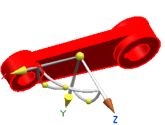
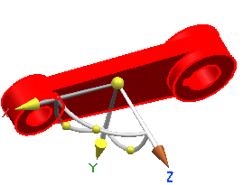

插入臂组件的一个运动
-
在图形窗口中，右击 des06_seq_valve_arm 并选择运动。

-
将臂沿 +Z 向移动5。

-
在记录组件运动对话框条上，点击取消
 。
。 -
将运动 13重命名为臂，并添加描述沿+ Z 移动5。
在图形窗口中，右击 des06_seq_valve_arm 并选择运动。
将臂沿 +Z 向移动5。

在记录组件运动对话框条上，点击取消  。
。
将运动 13重命名为臂，并添加描述沿+ Z 移动5。